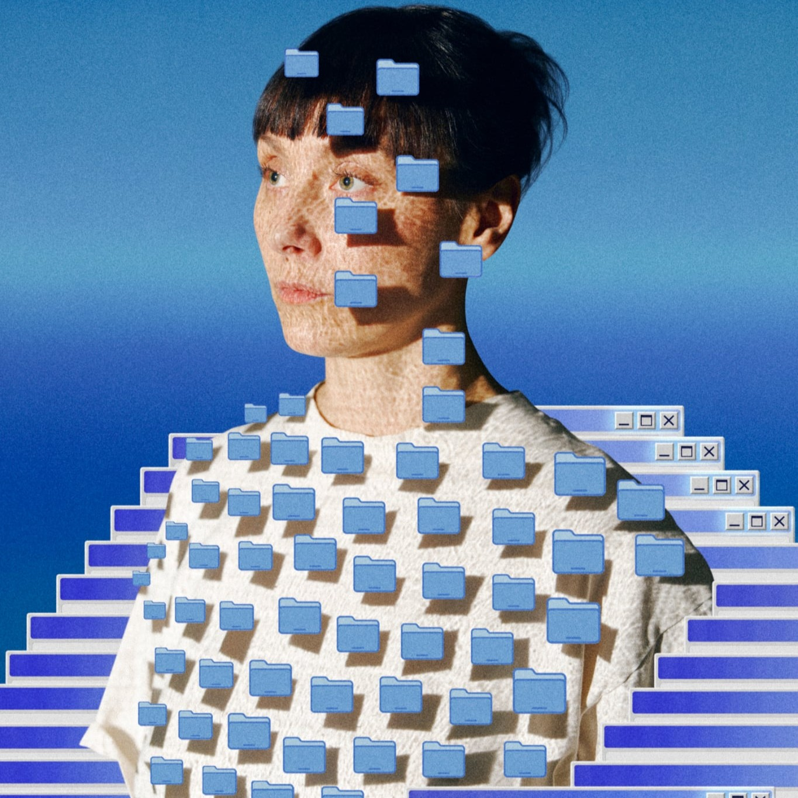

Osoby artystyczne
ARTIST TALKI


Heiko Schmid, Ugo Pecoraio (KUNSTSURFER)
Ugo Pecoraio jest kuratorem, doradcą i strategiem działający na styku kultury cyfrowej, krytyki instytucjonalnej oraz praktyki interdyscyplinarnej — obejmującej technologię, design, aktywizm i subkultury. Postrzega instytucje sztuki jako dynamiczne ekosystemy łączące osoby artystyczne, społeczności i publiczność. Opowiada się za przestrzeniami wystawienniczymi opartymi na radykalnej gościnności i autentycznym uczestnictwie. Dr Heiko Schmid jest historykiem sztuki, kuratorem i autorem mieszkającym w Zurychu. W swojej działalności badawczej i kuratorskiej skupia się na sztuce mediów i kulturze cyfrowej, historii kulturowej technologii, gatunku science fiction, posthumanizmie, współczesnym komiksie oraz przestrzeni kosmicznej jako miejscu technokulturowej wyobraźni. Łącząc praktykę akademicką z kuratorską, splata badania historyczne ze spekulatywnym i zorientowanym na przyszłość podejściem do sztuki, mediów oraz technologii.
What Happens When Ads Become Art? A conversation with Heiko Schmid and Ugo Pecoraio about parasites, browser defences, and the wish to make the internet a more exciting space for art.
Kreatywne ad-blokery to nic nowego. Niektóre zastępują reklamy zdjęciami kotków, inne abstrakcyjnymi wzorami. To, co wnosi do rozszerzeń do przeglądarki KUNSTSURFER, to praktyka kuratorska. Twórcy projektu przekształcają przestrzeń reklamową w kuratorowane wystawy online, poprzez wyselekcjonowane projekty artystyczne, które aktywnie wchodzą z nią w dialog. Heiko Schmid i Ugo Pecoraio przedstawią założenia, które leżą u podstaw funkcjonowania KUNSTSURFERA. Wykład skupi się na pytaniach, jakie rodzi ta sytuacja. Co oznacza pokazywanie sztuki w komercyjnej przestrzeni, nad którą nie ma się kontroli? Jak wpływa na naszą percepcję fakt, że nie wiemy już, co jest właściwą treścią, co reklamą pominiętą przez wtyczkę, a co sztuką?

Monika Masłoń
Monika Masłoń jest artystką działającą na styku kina eksperymentalnego i mediów cyfrowych. Ukończyła Akademię Sztuk Pięknych i uzyskała stopień doktora w Łódzkiej Szkole Filmowej. W swojej twórczości skupia się na ucieleśnionych spotkaniach, intersubiektywnej obecności i zapośredniczonej intymności, przekładając stany emocjonalne na formy audiowizualne i immersyjne, w tym film, rzeczywistość wirtualną (VR) oraz instalacje. Jest autorką filmu dokumentalnego „Four Percent”, nakręconego w całości w środowisku VRChat, oraz doświadczenia VR „Control Negative”.
„Can I hold your hand?” Notatki z pracy nad filmem Four Percent
Co dzieje się z ciałem, kiedy zakładamy headset VR? Z czego składa się doświadczenie dotyku, kiedy nie ma fizycznego kontaktu? Jaką rolę odgrywają urządzenie, awatar, dźwięk przestrzenny i nawyki, które przenosimy do wirtualnego świata? I co z tego da się przekazać widzowi? Te pytania towarzyszyły mi podczas pracy nad filmem Four Percent, dokumentem nakręconym w całości w VRChacie. Film powstawał jako badanie artystyczne, w którym byłam jednocześnie obserwatorką i uczestniczką. Headset, kamera na mojej głowie, zapisywał to, czego doświadczałam. Podczas montażu mogłam przyjrzeć się z dystansu temu, co wcześniej przeżyłam, i zobaczyć, jak odczuwamy bliskość drugiej osoby, kiedy jesteśmy daleko od siebie. W wystąpieniu opowiem o swoich obserwacjach i spróbuję nazwać warstwy, z których składa się dotyk w wirtualnej rzeczywistości.

Iza Koczanowska
Iza Koczanowska – artystka, badaczka i architektka wnętrz działająca między Amsterdamem a Warszawą. Rozszerzając architekturę poza to, co ludzkie, widzi przestrzeń jako nieprzejrzystą sieć istot więcej niż ludzkich, materii i krajobrazu. Na bazie badań terenowych tworzy spekulatywne instalacje z dźwięku, biomateriałów i technologii, które śledzą ekstrakcję i turystykę masową, renegocjują relacje z miejscem i podważają antropocentryczny triumf. Ukończyła z wyróżnieniem MA w Piet Zwart Institute.
Post-turystyka przez pryzmat praktyk cyfrowych
Podczas artist talku Iza Koczanowska opowie o wykorzystaniu narzędzi cyfrowych i technologicznych do krytycznego podejmowania tematu postturystyki. Punktem wyjścia będzie projekt Ugly Beach (2025), prezentowany w Nieuwe Instituut w Rotterdamie. To instalacja badawcza, która ukazuje plażę nie jako wyidealizowany raj, lecz jako krajobraz sporny, kształtowany przez turystykę, nierówny dostęp i niestabilność ekologiczną. Inspiracją była żółta piana morska napotkana na wybrzeżu Hagi, potraktowana jako materiał i metafora tego, co wymyka się wygładzonej estetyce i komodyfikacji. Artystka pokaże, jak skany 3D i silnik Unreal Engine posłużyły do stworzenia prototypu środowiska VR i gry na pada, a także elementów instalacji, łączącej agar, wodę morską, pianę i druk 3D z wideo i dźwiękiem.

Oleksandr Sirous
Oleksandr Sirous (ur. 1996 w Charkowie) to ukraiński artysta zajmujący się dźwiękiem i mediami. Pracuje z interaktywnymi symulacjami, silnikami gier oraz interfejsami rzeźbiarskimi. Bazując na doświadczeniu w animacji oraz sztuce klasycznej, bada w jaki sposób technologie przekształcają terytoria, percepcję oraz relacje między podmiotami ludzkimi i pozaludzkimi. Jego praktyka obejmuje współpracę z Photinus Studio oraz długofalowy projekt badawczy LIMEN.
LIMEN: Learning to See Through Other Bodies
Jak zmienia się pejzaż, gdy doświadczamy go poprzez ciało robota? Ukraiński artysta Oleksandr Sirous podejmuje to pytanie w LIMEN — długofalowym projekcie badawczo-artystycznym, który łączy interaktywne symulacje, interfejsy rzeźbiarskie oraz mechanikę znaną z gier wideo. Odwołując się do terytoriów przeobrażonych przez wojnę, ograniczony dostęp i opuszczoną infrastrukturę, projekt bada spotkania maszyn, żywych organizmów i śladów ludzkiej kontroli. Roboty-eksploratorzy poruszają się w nim po niepełnych mapach, przy niestabilnych sygnałach i w otoczeniu, które opiera się jednoznacznej interpretacji. Sirous opowie o tym, jak badania wpływają na przekształcanie symulowanego świata oraz jak niewielkie, ręczne urządzenia zmieniają obserwację w relację opartą na trosce, zależności i odpowiedzialności. Wykład stawia pytanie - co zostaje z ludzkich intencji, gdy technologie wkraczają w inne ekologie, a także jak interfejs może pozwolić nam zadomowić się w tej niepewności?

Martyna Marciniak
Martyna Marciniak w swojej twórczości łączy teorię mediów z refleksją nad prawem, badając, w jaki sposób mechanizmy władzy kształtują obrazy i infrastruktury wizualne. Często sięga do wydarzeń historycznych, które rewiduje za pomocą rzeźby, wideo i animacji. Posługując się metodą, którą można określić mianem pataforensyki — przewrotnie wykorzystuje język i estetykę nauki oraz forensyki, obnażając ich niepewność, sprzeczności i niedoskonałości. Jej prace prezentowano m.in. w Onassis Stegi, Copenhagen Contemporary, Ars Electronica (gdzie otrzymała wyróżenienie za projekt Anatomy of Non-Fact), Aksioma, na Biennale Warszawa oraz w LABoral Centro de Arte.
Prędkość i zanikanie: O technologicznych wymiarach czasu
Jak technologie zmieniają obrazy, przepływ informacji i ludzką pracę? Co znika, gdy informacje krążą coraz szybciej? Co się dzieje, kiedy obrazy rozprzestrzeniają się, zanim ktokolwiek zdąży sprawdzić ich autentyczność? Od odtworzenia w rzeczywistości kurtki wygenerowanego przez AI Papieża Balenciagi (Balenciaga Pope), przez analizę gry The Sims jako symptomu i źródła kultury ryzyka (risk culture), aż po infrastrukturę błyskawicznego przesyłania i przetwarzania danych w CERN, wykład ""Prędkość i zanikanie"" łączy moje ostatnie projekty, pokazując, jak tempo procesów obliczeniowych wpływa na nasze postrzeganie rzeczywistości i kształtuje nowe sposoby doświadczania czasu. Przyglądając się śledztwom forenzycznym, materialnym interpretacjom cyfrowych artefaktów i rzeźbom kinetycznym, opowiem o rzeczywistych, materialnych konsekwencjach działania technologii, od śledzenia losów syntetycznych obrazów w kulturze po absurdalne mechaniczne choreografie maszyn, które nieustannie czekają na anomalię.

Senaida
SENAIDA (ur. 2002) to chińsko-kanadyjska osoba artystyczna z grupy Hakka. Zajmuje się uzdrawianiem dźwiękiem, badaniem i kuratorstwem. Twórczość SENAIDY jest transdyscyplinarna i stanowi eksplorację punktów wspólnych szamanizmu, posthumanizmu, sztuki generatywnej, projektowania interakcji i zrównoważonego rozwoju. SENAIDA zajmuje się architekturą dźwięku, DJ-owaniem i przedsiębiorczością z sektora kreatywnego, przy okazji tworząc liminalne doświadczenia zbiorowe, które na nowo definiują granice sztuki dźwięku i technologii. Prace SENAIDY były prezentowane m.in. podczas Berlin Art Week,LA Art Show, CTM Festival, Cannes Next Film Festival oraz NYC Media Lab.
Guest People, Living Archives: The Hakka Futurist Manifesto
W tym wykładzie mieszkająca w Berlinie osoba artystyczna Senaida Ng przedstawi Manifest Hakka-Futuryzmu (The Hakka Futurist Manifesto) — koncepcję wyobrażania sobie przyszłości diaspory poprzez dźwięk, archiwa i technologię. Hakka (客家) tłumaczy się jako „ludzie-goście”: to kultura ukształtowana przez wieki migracji, rozproszona dziś na terenie Azji, wyspach na Oceanie Indyjskim, Karaibach i po Amerykach. Senaida rozpocznie od historii Hakka oraz roli, jaką odgrywa w niej dźwięk — od pieśni górskich po język traktowany jako mobilna ojczyzna. Następnie pokaże, jak praca z archiwami może budować globalne sieci kontaktów, odwołując się do swoich badań z pracy magisterskiej, miksu „Hakka Means Guest People” zawierającego wywiady z przedstawicielami diaspory Hakka, rozrastającej się bazy danych z historiami diaspory oraz swoich wizyt w społecznościach Hakka w Indonezji, Hongkongu, Tajwanie i Indiach. Na koniec Senaida proponuje koncepcję Przodkowskiej Sztucznej Inteligencji (Ancestral AI) — żywej biblioteki, za pośrednictwem której diaspory mogą przechowywać, udostępniać i przekazywać własne historie. Projekt ten stawia pytania o zgodę, pamięć oraz o to, kto ma prawo wypowiadać się w imieniu przodków.

Albena Baeva i Renee Beekman (Gallery Gallery)
Albena Baeva i Rene Beekman to artyści cyfrowi i kuratorzy mieszkający w Sofii. Razem tworzą, kuratorują wystawy oraz organizują wydarzenia poświęcone sztuce interaktywnej i cyfrowej. Są współzałożycielami studia projektowania interaktywnego Reaktiv, eksperymentalnego laboratorium sztuki Symbiomatter oraz Gallery Gallery — pierwszej galerii sztuki cyfrowej w Bułgarii. Albena Baeva to jedna z czołowych artystek sztuki interaktywnej w Bułgarii. Jej prace były pokazywane na festiwalach, w galeriach i muzeach w Europie, Turcji oraz USA, a niedawno trafiły do kolekcji sztuki Art Collection Telekom. Prace Rene Beekmana były prezentowane m.in. w Stedelijk Museum, Art Amsterdam, Kunst RAI i de IJsbreker w Amsterdamie, het Appollohuis w Eindhoven, The Kitchen w Nowym Jorku oraz w Städtische Museen Jena. Jest współzałożycielem programu magisterskiego Sztuki Cyfrowe (Digital Arts) na Narodowej Akademii Sztuk w Sofii, gdzie wykładał przez 8 lat, a także festiwali takich jak xfilm Festival, xfilm lectures czy DA Fest.
It Is Easier to Apologize: Guerrilla Tactics as a Curatorial Form
Na placu zabaw w Sofii, między huśtawkami a Urzędem Rejestrowym (Registry Agency), znajduje się park rzeźb. Nikt oficjalnie nie zatwierdził jego budowy, a mimo to od pięciu lat jest otwarty całodobowo. Punktem wyjścia do wykładu jest znane powiedzenie kontradmirał Grace Hopper — pionierki rozwoju komputerów — że łatwiej jest przeprosić niż prosić o pozwolenie. Przygląda się partyzanckim taktykom (guerrilla tactics) jako świadomej metodzie kuratorskiej, a nie jedynie rozwiązaniu zastępczemu.

Simon Weckert
🆂𝗂𝗆𝗈𝓃 ᵂє𝐜𝐤𝐞ⓡᎢ, 𝔴𝔰𝔭ó𝔩𝔠𝔷𝔢𝔰𝔫𝔶 𝕔𝕪𝕗𝕣𝕠𝕨𝕪 𝒸𝓏𝒶𝓇𝑜𝒹𝓏𝒾𝑒𝒿 & rzartobliwy majsterkowicz, tworzy w 𝓬𝔶𝓯𝓻𝓸𝔀𝔶𝓶 ś𝔀𝓲𝓮𝓬𝓲𝓮, gdzie 𝖐𝗈𝖽 i 𝕦𝕜ł𝕒𝕕𝕪 ≠ tylko narzędzia, lecz ironiczne komentarze. Łączy: ☷ Technologię, Sztukę & zadziorną krytykę , rozplątując 🜂𝖟𝕒𝕨𝕚ł𝕖 problemy, od których zachodzimy w 🅶🅻🅾🆆Ę. °❀⋆.ೃ࿔*:･
Machine (Un)learning by Simon Weckert
Co się dzieje, gdy przestajemy po prostu korzystać z systemów AI, a zaczynamy je podważać? W autorskim wykładzie Simon Weckert podzieli się spostrzeżeniami ze swojej praktyki „oduczania maszyn” (machine unlearning) — podejścia, które nie przyjmuje bezkrytycznie logiki algorytmicznych systemów, lecz ją podważa. U podstaw tej praktyki leży proste pytanie: jak sprawić, by niewidzialne reguły i założenia zakodowane w modelach AI stały się widoczne — i jak je świadomie podkopywać? Weckert pokazuje, jak kreatywne hakowanie systemów sztucznej inteligencji otwiera nowe przestrzenie estetyczne, stawiając jednocześnie pytania o stronniczość algorytmów (bias), kontrolę oraz cyfrową władzę.

Maite Cajaraville, Gisle Frøysland (PIKSEL Festival)
PIKSEL to międzynarodowy festiwal i platforma sztuki elektronicznej oraz wolnych i otwartych technologii, działający w Bergen w Norwegii, który powstał w 2003 roku. Łączy artystów, programistów i publiczność poprzez wystawy, występy na żywo, warsztaty i wspólne projekty badawcze. PIKSEL podejmuje temat artystycznych, społecznych i politycznych możliwości wolnych i otwartych technologii, wspierając eksperymentowanie, dzielenie się wiedzą oraz krytyczny namysł nad systemami, które kształtują nasze życie. Maite Cajaraville to hiszpańska multidyscyplinarna artystka mediów mieszkająca w Bergen w Norwegii. Jej praktyka obejmuje sztukę elektroniczną, audiowizualne performanse oraz instalacje.W swojej twórczości bada relacje między technologiami, terytoriami a zbiorową sprawczością. Jest współkuratorką i współdyrektorką PIKSEL Festival oraz członkinią NSA Collective (wraz z Gisle Frøyslandem). Gisle Frøysland jest artystą i dyrektorem artystycznym PIKSEL — międzynarodowego festiwalu sztuki elektronicznej oraz wolnych i otwartych technologii w Bergen w Norwegii. W swojej pracy łączy artystyczne eksperymenty z otwartymi technologiami i praktykami opartymi na współpracy. Razem z Maite Cajaraville tworzy NSA Collective.
Artistic Interventions and Speculative Science Fiction: Reimagining Collective and Ecological Futures
Co oznacza troska, gdy myślimy o terytoriach? Wykład dotyczył będzie dwóch projektów artystycznych: Solar4Rain oraz Adoquines del Guadiana / Brostein for (De)Konstruksjon Av Kampsonen, w których podejmowany jest temat relacji między technologiami, zasobami, ludźmi i podmiotami pozaludzkimi. Solar4Rain to atmosferyczna, punkowa symbioza, która traktuje troskę jako ekologiczną wzajemność. Czy woda, światło słoneczne i inne zasoby naturalne mogą być wspólnym dobrem i czy technologia może odpowiadać na potrzeby ekologiczne zamiast na potrzebę eksploatacji, posiadania i zarabiania? Z kolei Adoquines del Guadiana ujmuje troskę jako zbiorową odpowiedzialność. Kto decyduje o tym, jak przekształca się terytorium, i jak społeczności mogą negocjować ze sobą sprzeczne interesy rządów, korporacji i infrastruktur? Oba projekty są zaproszeniem do ponownego przemyślenia tego, jak dzielimy się zasobami, jak zamieszkujemy krajobrazy i jak bierzemy odpowiedzialność za miejsca, które zmieniamy.
WYSTAWY

Game Poems
Game Poems, Issue #1: First Moves
„Game Poems, Issue #1: First Moves” to grywalny magazyn, którego celem jest ukazanie poetyckiego potencjału krótkich form gier wideo oraz zgłębienie nietypowych sposobów tworzenia i prezentowania doświadczeń opartych na rozgrywce. Zamiast stanowić jedynie zbiór niezależnych tytułów, publikacja ta została pomyślana jako spójne, autorskie przedsięwzięcie: poszczególne krótkie utwory współistnieją w ramach wspólnej struktury, prowokując do przemyślenia na nowo tego, w jaki sposób doświadczamy gier wideo i czemu mogą one służyć. Wydanie pierwsze, powstałe w wyniku otwartego naboru oraz procesu recenzenckiego, gromadzi trzynaście krótkich, eksperymentalnych gier wideo autorstwa międzynarodowego grona artystów, poetów, badaczy i projektantów gier. Każdy z utworów powstał w odniesieniu do wspólnego tematu przewodniego oraz założeń redakcyjnych; całość prezentowana jest za pośrednictwem dedykowanego interfejsu, który kształtuje sposób, w jaki odbiorcy stykają się z tymi dziełami, interpretują je i w nie grają.

Adrianna Makowska
Projektantka pochodząca z Bytomia, która łączy sztukę z tworzeniem rozwiązań wpływających pozytywnie na codzienne życie ludzi. Zawodowo webdesignerka w czasie wolnym Ilustratorka działająca pod pseudonimem Lolada, znakiem rozpoznawczym jej stylu są przerysowane kolorowe postacie przyłapane w momencie zawieszenia między „ups” a „udawaj, że nic się nie stało”. Jej projekty prezentowane były na wielu wystawach w Polsce jak i za granicą m.in Francji, Kanadzie, Turcji czy Wielkiej Brytanii. Absolwentka wzornictwa /projektowania systemów informacji wizualnych oraz interakcji na Akademii Sztuk Pięknych w Katowicach. Miłośniczka sudoku i spacerów.
Self: Updating
Manifest cyfrowy promowany jako narzędzie przyspieszające proces zdobywania nowych umiejętności do pracy. Dotyczy obserwowanego kryzysu pracy, kwestionuje rosnącą potrzebę konkurowania z szybko rozwijającą się sztuczną inteligencją i konieczność ciągłego samokształcenia w erze post-pracy. Jak odnaleźć poczucie własnej wartości w świecie pracy coraz silniej kształtowanym przez technologię? Projekt zachęca do refleksji nad relacją człowieka z pracą i AI, pokazując, że odpoczynek, troska i akceptacja własnych ograniczeń są równie ważne dla rozwoju zawodowego jak efektywność i zdobywanie nowych umiejętności.

Shibai Tang
Shibai Tang jest chińskim artystą urodzonym i wychowanym w Dubaju (ZAE), obecnie mieszkającym we Francji. Jego praktyka obejmuje rzeźbę, instalację, elektronikę, robotykę oraz technologie cyfrowe. Wykorzystując własnoręcznie zbudowane mechanizmy, odzyskane elementy elektroniczne i technologie z drugiej ręki, bada, w jaki sposób systemy technologiczne i medialne kształtują percepcję, pamięć oraz naszą relację ze współczesnym światem.
Please Scan All Items Before Proceeding to Payment
Please Scan All Items Before Proceeding to Payment” – to interaktywna instalacja składająca się z dziesięciu wykonanych z żywicy małych palców (tzw. palców małych), z których każdy został osobno zamknięty w przezroczystym opakowaniu z PVC i wyeksponowany niczym towar w sklepie. Każdy palec można zeskanować za pomocą czytnika kodów kreskowych, co uruchamia określoną formę przekazu lub interakcji: tekst, dźwięk, obraz, wideo, ciszę i/lub treści cyfrowe. Punktem wyjścia dla tej pracy jest proste pytanie: co jest najdziwniejszą rzeczą, jaką ludzkość przekształciła w towar? Odpowiedzią jest obietnica. Zobowiązania polityczne, deklaracje dotyczące ochrony środowiska, traktaty, zawieszenia broni czy zapewnienia o pokoju są składane, wymieniane i rozpowszechniane – a jednocześnie często odkładane w czasie, rozmywane lub porzucane. Obietnica przypieczętowana zetknięciem małych palców – być może najbardziej niewinna forma ludzkiego zobowiązania – staje się tu soczewką, przez którą można spojrzeć na porozumienia o znacznie większej skali. W każdym opakowaniu znajduje się tylko jeden mały palec; drugi należy do konsumenta. Obietnica może zostać spełniona dopiero wtedy, gdy ktoś wyciągnie dłoń w odpowiedzi. Każde skanowanie odsłania obietnicę. Każda obietnica wiąże się z jakimś kosztem.

Szkarpaty
szkarpaty działa na styku net-artu, eksperymentalnej poezji i literatury cyfrowej, a jego medium jest przeglądarka. Prowadzi rzękulec., interaktywny dziennik w formie stacji nasłuchowej na oceanie. Bada w nim siebie sprzed lat, wyławiając fragmenty z własnego archiwum prawie 750 wpisów z lat 2018-2023. W pracach dotyka tematów rozwoju i codziennej walki, relacji człowieka z maszyną oraz relacji z Tobą, czytelnikiem. Publikuje pod pseudonimem.
Rzękulec
rzękulec. to interaktywny dziennik, którego nie da się czytać biernie. Przyjmuje formę stacji nasłuchowej na oceanie, która w przeglądarce odbiera transmisje z różnych głębokości. Część czyta się działaniem, część jest audiowizualna, część to świeże spojrzenie na siebie sprzed lat. W „spalonych kartkach” ogień trawi zapiski i od czytelnika zależy, czy je ocali; inaczej przepadną bezpowrotnie. „dwa okna.” otwierają się w dwóch oknach przeglądarki i dopiero ustawione obok siebie mogą dokończyć rozmowę. W „cyklosferze” każda odpowiedź zostawia coś po sobie na obręczy, a w „śladzie.” historia jednej nocy idzie dalej tylko, gdy czytelnik trzyma przycisk. Na dnie czeka „twoje miejsce.”, cyfrowy ambient room, w którym towarzyszy Ci złota rybka Bartuś. Gest i wybór czytelnika decydują, a stacja pamięta. Wpisy można odkrywać w dowolnej kolejności. Dźwięk powstaje na żywo, bez plików audio, ciasteczek i kont. Na INTER:AKT stacja działa offline, a poza festiwalem nadaje pod rzekulec.pl.

Neno Belchev (Gallery Gallery)
Neno Belchev urodził się w 1971 roku w Warnie, gdzie żyje i tworzy. Ukończył malarstwo ścienne na Narodowej Akademii Sztuk Pięknych. Belchev tworzy wideo-art i filmy, a także działa w obszarze performansu, instalacji, rzeźby i nowych mediów. Jest autorem pełnometrażowego „Nie-filmu” (2016), filmów dokumentalnych oraz licznych krótkometrażowych filmów fabularnych i prac z zakresu wideo-artu, które zdobyły nagrody na międzynarodowych festiwalach sztuki wideo i filmowych we Włoszech, Malezji, Indiach, Rumunii, Stanach Zjednoczonych, Rosji, Holandii, Hiszpanii i Austrii. Belchev brał również udział w rezydencjach artystycznych w Hiszpanii, Stanach Zjednoczonych, Rosji, Chinach, Japonii, Francji, Portugalii i Bułgarii.
The Yo-yo of God
The Yo-yo of God autorstwa Neno Belcheva to rzeźba w rozszerzonej rzeczywistości (AR), która przedstawia „Fat Mana” – bombę atomową – jako zabawkę yo-yo przymocowaną do dłoni Chrystusa w geście błogosławieństwa. To połączenie tworzy nowy gest, w którym Boże błogosławieństwo spotyka się z całkowitą zagładą. Niczym współczesny miecz Damoklesa, praca ta nawiązuje do stale obecnego i nieuchronnego niebezpieczeństwa, jakie stwarzają ci, którzy w imię swojego boga nadużywają władzy, wiedzy i technologii.

Albena Baeva (Gallery Gallery)
Albena Baeva to jedna z czołowych artystek sztuki interaktywnej w Bułgarii. Pracuje ze sztuczną inteligencją (AI), obliczeniami fizycznymi (physical computing), twórczym kodowaniem (creative coding) oraz rozszerzoną rzeczywistością (AR). Promuje dyskurs feministyczny w obszarze technologii i sztuki (tech-art). Jako współzałożycielka pierwszej galerii sztuki cyfrowej w Bułgarii Gallery Gallery oraz parków rzeźby AR w Sofii, Warnie i Berlinie, prezentuje i wspiera innych artystów w przygotowywaniu eksperymentów artystycznych. Jej prace były pokazywane na festiwalach, w galeriach i muzeach w Europie, Turcji oraz USA, a niedawno trafiły do kolekcji sztuki Art Collection Telekom.
When I Dream I Fly, I Swim
Pływaczka porusza się w powietrzu nad nami. Tak jakby woda zmieniła swoje miejsce, zniknęła albo przejęła władzę nad światem. W tej pracy z wykorzystaniem rozszerzonej rzeczywistości Albena Baeva zakotwicza nad widownią w pełni ubraną pływaczkę. Kod QR Gallery Gallery umieszczony jest na skromnym domku dla bezdomnych kotów. To surrealistyczny obraz zmieniającej się biosfery, w której przetrwanie oznacza adaptację, wytrwałość i troskę nie tylko o nas samych. W pływaniu kobiety w pracy When I Dream I Fly, I Swim nie ma strachu. Jej spokojny, miarowy ruch wyraża raczej determinację, wrodzoną odporność lub wręcz upór w walce z własnym losem. To ciche ostrzeżenie klimatyczne i marzenie o radykalnej, międzygatunkowej empatii.

Link (Gallery Gallery)
Marc-Oliver Pospiech (znany również jako Link; urodzony w Berlinie w 1976 roku) to artysta wizualny, który studiował sztuki piękne na Muthesius Kunsthochschule w Kilonii, gdzie w 2012 roku uzyskał tytuł magistra sztuk pięknych. Żyje i tworzy w Berlinie. Jego multidyscyplinarna praktyka łączy malarstwo, rzeźbę, instalację oraz scenografię, badając znaki, percepcję i komunikację. Obok działalności artystycznej pracuje też jako kurator w ramach Neue Kunst Initiative Marzahn-Hellersdorf oraz Projektraum Galerie M.
Scam
„Zaufaj mi” — to właśnie mówi nam każdy kod QR. Po prostu zeskanuj kod i uzyskaj dostęp, skorzystaj ze specjalnej oferty albo dowiedz się, co czyni nasz produkt wyjątkowym. Scam autorstwa Linka (pesudonim artystyczny) przypomina nam, że wygoda ma swoją cenę. Chciałeś tylko zobaczyć dzieło sztuki. Szybki skan, jedno kliknięcie — to wyglądało tak prosto i wiarygodnie. Ale teraz artysta ma już to, na czym mu zależało.

Chia Amisola
Chia Amisola pracuje z technologią (jest tech worker) i pochodzi z Filipin. W swojej twórczości zajmuje się zagadnieniami straty, miłości, pracy i wyzwolenia w przestrzeni internetu, ze szczególnym uwzględnieniem doświadczenia Trzeciego Świata. Tworzy prace poświęcone intymności, infrastrukturze i nieskończoności, łącząc tekst, strony internetowe oraz performance. https://everythingi.love/
Arkipelago, Ark 1
Arkipelago na nowo odczytuje filipińskie mity o „powtórnym stworzeniu świata”, w których nowy świat wyłania się z pierwotnej materii — w tym przypadku z interfejsu komputerowego. W części Ark 1 postacie powoli poruszają się po pejzażach pulpitu inspirowanych filipińskim malarstwem realizmu społecznego, przywołując codzienność życia rolniczego oraz sferę domową w obliczu katastrofy. Praca, składająca się ze stron internetowych zbudowanych za pomocą ręcznie pisanego kodu, procesów generatywnych oraz manipulacji pulpitem na żywo, przekształca okna przeglądarki w rozwijający się świat. Akty tworzenia wcześniej zarejestrowane na ekranie i na nowo skomponowane stają się żywym, ciągłym performansem — światem podtrzymywanym i odnawianym poprzez gesty twórcze.
PERFORMANCE

Kylie Oh
𝐊𝐘𝐋𝐈𝐄 𝐎𝐇 (ur. w 1996 roku w Seulu) to artystka dźwiękowa mieszkająca w Kolonii, zajmująca się eksperymentalną muzyką elektroniczną i komputerową. W swojej twórczości koncentruje się na immersyjnych, przestrzennych doświadczeniach słuchowych, które budują zbiorową pamięć oraz badają relacje ekologiczne i demokratyczne między różnorodnymi tożsamościami. Jej najnowsze projekty to Lady Lazarus Underwater (2025), zaprezentowany premierowo jako utwór radiowy na festiwalu Radiophrenia w Glasgow (2026), oraz występ na żywo z muzyką elektroniczną w Kolonii (2026). Artystka dorastała, oglądając japońskie anime science fiction z lat 80. oraz czytając powieści Isaaca Asimova, Douglasa Adamsa i Octavii Butler.
From Earth to Earth
From Earth to Earth to kompozycja dźwiękowa, inspirowana japońską mangą i anime science fiction z lat 80. XX wieku, zapraszająca słuchacza do doświadczenia wspólnego ,,wsłuchiwania się razem z Ziemią’’. Odrzucając nadmiernie skomercjalizowany sposób doświadczania rzeczywistości za pomocą zmysłów, artystka zachęca do wsłuchiwania się w otaczający świat i nawiązywania dźwiękowego rezonansu z innymi istotami, jako częściami ziemskiego ekosystemu. W kompozycji wykorzystano cztery rodzaje nagrań terenowych: rejestracje odgłosów miejskich, generatywny model neuronowy do tworzenia dźwięku RAVE opracowany przez IRCAM, wytrenowany na zbiorze nagrań miejskich odgłosów zebranych samodzielnie przez artystkę w różnych miastach, nagrania drgań gruntu rejestrowane za pomocą geofonu umieszczonego na różnych powierzchniach oraz działający na żywo system sprzężenia zwrotnego, który rejestruje i przekazuje drgania powierzchni za pomocą geofonu zainstalowanego w miejscu występu.
WARSZTATY

Kartografie niewidzialne
Zespół realizujący projekt poświęcony niszowym inicjatywom artystycznym Katowic. Na podstawie badań terenowych i rozmów z osobami tworzącymi te przestrzenie grupa opracowała przewodnik po niezależnych przestrzeniach artystycznych miasta. Przedstawia on miejsca spoza głównego obiegu instytucjonalnego, ukazując ich różnorodność, sposoby działania oraz znaczenie dla lokalnej społeczności. Podczas wydarzenia Chodź na Plac przeprowadzili konsultacje społeczne dotyczące widoczności tych miejsc wśród mieszkańców.
Szlakiem oddolnych przestrzeni artystycznych — lokalna sztuka w dobie cyfryzacji
Czy sztuka może łączyć ludzi niezwiązanych ze światem artystycznym? Czy oddolne inicjatywy mają szansę istnieć w dzisiejszym świecie konsumpcjonizmu i wielkich korporacji? Jak technologie i nowe media wpływają na ich funkcjonowanie – czy pomagają im zaistnieć, czy tworzą niewidzialne bariery? Nad tymi i innymi pytaniami pochylimy się podczas warsztatów 8 listopada, organizowanych przez zespół projektu Kartografie niewidzialne. Szlakiem niszowych przestrzeni artystycznych Katowic. W pierwszej części zaprezentujemy wyniki naszych badań, aby następnie zaprosić uczestników do stworzenia własnej wizji idealnego „trzeciego miejsca” – przestrzeni sprzyjającej spotkaniom, twórczości i budowaniu relacji. Wspólnie zastanowimy się, jakie potrzeby mogą zaspokajać takie miejsca i jak wpływają na rozwój lokalnych społeczności.
SEANSE FILMOWE
Monika Masłoń
Monika Masłoń jest artystką działającą na styku kina eksperymentalnego i mediów cyfrowych. Ukończyła Akademię Sztuk Pięknych i uzyskała stopień doktora w Łódzkiej Szkole Filmowej. W swojej twórczości skupia się na ucieleśnionych spotkaniach, intersubiektywnej obecności i zapośredniczonej intymności, przekładając stany emocjonalne na formy audiowizualne i immersyjne, w tym film, rzeczywistość wirtualną (VR) oraz instalacje. Jest autorką filmu dokumentalnego „Four Percent”, nakręconego w całości w środowisku VRChat, oraz doświadczenia VR „Control Negative”.
4%
Four Percent bada doświadczenie spotkania w wirtualnej rzeczywistości i wciąż zmieniające się formy międzyludzkiego kontaktu. Poprzez intymne zapisy cyfrowych spotkań film przygląda się poczuciu obecności w świecie, w którym ciała są nieobecne, ale bliskość wydaje się realna. Analizuje wyobrażony dotyk, to, jak poprzez gesty awatarów, wygenerowaną współobecność i bliskość czyjegoś głosu wypełnia się luka pozostawiona przez brak fizycznego kontaktu. Nakręcony w całości wewnątrz VRChat, Four Percent oddaje napięcie między dystansem a bliskością, stawiając pytanie o cielesność, realność doświadczenia i więź w coraz bardziej zapośredniczonym cyfrowo świecie.

Anastazja Naumenko
Anastazja Naumenko jest artystką i reżyserską, której główne poszukiwania twórcze skupiają się na splotach i wzajemnych relacjach świata rzeczywistego i wyobrażonego, dlatego większość jej prac stanowi połączenie dokumentu z fikcją. Anastazja studiuje obecnie na Uniwersytecie Sztuk Stosowanych w Wiedniu (die Angewandte) na wydziale Transarts. Jej debiutancki film „We hope you won’t need to come back” był prezentowany na ponad 25 festiwalach na całym świecie.
Czy Ty mnie słyszysz?
Nastia, która od wielu lat mieszka za granicą, zaczyna uczyć swoją matkę, jak korzystać z usług internetowych. Różne postrzeganie technologii staje się punktem wyjścia do ujawnienia konfliktów międzypokoleniowych i dawno zapomnianych wątków rodzinnych. Skomplikowana nawigacja po mediach społecznościowych odzwierciedla nie mniej trudną drogę do komunikacji. Podczas nauki bohaterki dowiadują się dużo o sobie nawzajem, ale czy odzyskana za pomocą Zooma bliskość będzie miała decydujący wpływ na dalszą relację między dwiema dorosłymi kobietami?

Simone Hooymans
Simone Hooymans (ur. 1974 w Holandii) to artystka wizualna i animatorka mieszkająca w Norwegii. Łącząc tradycyjne, ręcznie malowane akwarele oraz rysunki wykonane ołówkiem z animacją cyfrową, kreuje imersyjne i ulotne światy, w których krajobrazy oraz żywe formy ulegają nieustannej transformacji. Jej twórczość zgłębia kruchą relację między człowiekiem a naturą, dotykając kryzysu klimatycznego, przemiany oraz tajemnic świata przyrody. Animacje i instalacje wideo Hooymans są prezentowane na międzynarodowych wystawach oraz festiwalach filmowych.
The Perpetual Tapestry
The Perpetual Tapestry to eksperymentalna animacja o walącym się, przechodzącym transformację świecie, w którym wszystko jest ze sobą połączone nitkami tkaniny.

Amandine Thomas
Amandine Thomas jest francusko-amerykańską pisarką, reżyserką i montażystką, działającą na styku różnych gatunków i formatów. Wraz ze swoim artystycznym partnerem Gerardo Coello Escalante stworzyła trylogię krótkometrażową Expectations Trilogy, której każdy kolejny film miał swoją premierę na Festiwalu Filmowym w Sundance przez trzy kolejne lata z rzędu.
hello beautiful please follow back
Relacja babci reżyserki z internetowym oszustem matrymonialnym staje się punktem wyjścia do badania sposobów, w jakie dążymy do nawiązywania więzi za pośrednictwem internetu.

Gala Hernández López
+10k
VIRTUAL REALITY

Krzysztof Grudziński (Silesian Museum)
HAŁAS VR
Immersyjna interpretacja powieści Małgorzaty Halber o tym samym tytule, z Martą Malikowską w roli głównej. To opowieść o codzienności w dobie technologii – ciągłym przebodźcowaniu, rozproszonej uwadze oraz potęgowanym poczuciu samotności w zatłoczonej przestrzeni mediów społecznościowych. Spektakl, utrzymany w estetyce zina, postpunka, retro gier, glitchowych kolaży, memów i postinternetowych odniesień, bada, jak hałas zewnętrzny – cyfrowy, miejski i społeczny – przenika do naszego wewnętrznego świata, nie tylko jako tło, ale też jako jego znacząca część. Twórcy, łącząc VR, Augmented Reality i elementy gier wideo, stawiają pytanie o to, jak technologia redefiniuje naszą obecność, skupienie oraz relacje z drugim człowiekiem. Gościnnie w spektaklu występują raper Wini i pisarz Łukasz Orbitowski. Za reżyserię odpowiada Krzysztof Grudziński. Za produkcję Shootme. Partnerem jest Muzeum Sztuki Nowoczesnej w Warszawie. Projekt otrzymał dofinansowanie z Instytutu Przemysłów Kreatywnych.
Długość: 26 min.
Język: Polski
Rekomendowany wiek: 12+
Poziom skomplikowania: Proste interakcje
Komfort rozgrywki: Średni (aplikacja może powodować zawroty głowy lub chwilowe nudności u osób wrażliwych)